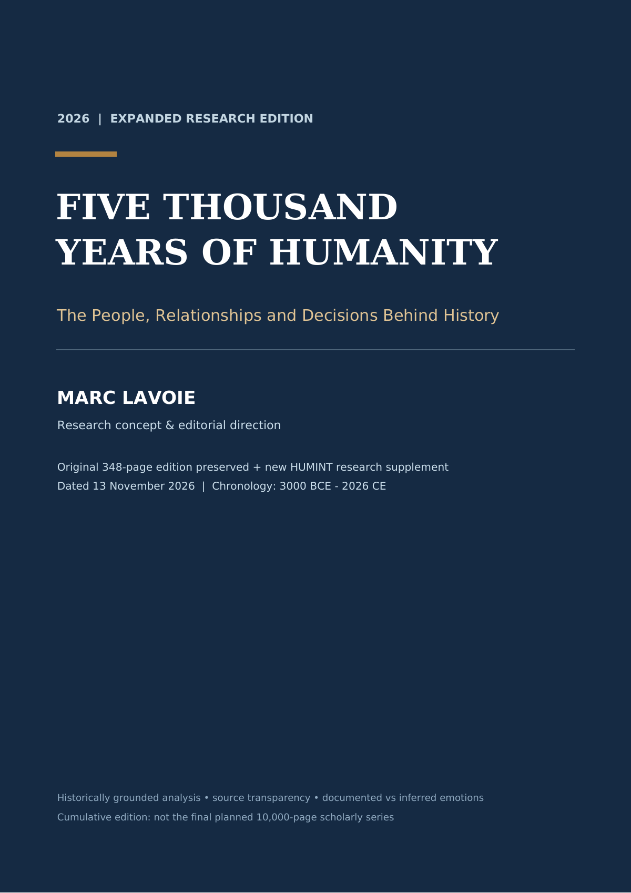

Editorial scope & reader guide
Attribution, limitations, source-audit status, and six rules for testing an influence claim.
3000 BCE–2026 CE · people · relationships · decisions
This illustrated research atlas turns a 530-page historical volume into an explorable chronology. Follow 201 editorial generations, compare nine regions, examine named influence, and keep documented statements separate from inference, legend, and what cannot be recovered.
Editorial boundary: Marc Lavoie is credited with the research concept and editorial direction. The volume identifies its supplemental analysis as an AI-assisted editorial synthesis and does not claim every passage or archival claim was independently verified.

The volume architecture
The preserved reference edition supplies the chronological spine. The new supplement asks who could reach a decision-maker, what was actually communicated, which institution could implement the choice, and what competing explanation still fits.
Attribution, limitations, source-audit status, and six rules for testing an influence claim.
Two hundred one 25-year editorial cohorts, nine regional perspectives, 208 event-based records, person-centered inserts, chronological index, and source guides.
Named actors and institutions examined through access, evidence, public conviction, constraints, and consequences.
Event-linked files separating reported events, possible mechanisms, rival explanations, archival tests, and citation status.
Seventeen public research entry points supporting the deep studies, with an explicit warning that a source pointer is not a complete multi-archive review.
Nine histories in parallel
Every generation situates its selected turning points beside nine broad regional snapshots. The regions are navigational lenses—not claims that vast populations shared one path, one identity, or one level of historical importance.
Interactive chronicle
Search every generation, the 2026 coda, all 17 deep studies, and all 159 influence dossiers. Each result opens the unchanged volume at its verified PDF destination.
Showing the first 24 of 378 entry points.
Historical intelligence method
A person can be near power without changing a decision. A public statement can document what was said without proving sincerity. A dramatic outcome can coexist with institutional, military, economic, religious, environmental, and accidental causes.
Begin with the chronology, date, regional setting, and affected populations.
Identify who could reach the decision-maker and through which office, relationship, or channel.
Look for a dated communication, identifiable recommendation, report, speech, order, or testimony.
Separate receiving information from acting because of it; reconstruct the sequence when records allow.
Compare personal influence with institutions, logistics, material conditions, ideology, coercion, and chance.
State what is documented, inferred, mediated, unrecoverable, and still open to archival testing.
D / I / M / U evidence scale
The volume’s four-category system keeps a reader from silently upgrading an inference into a fact. It also protects people missing from elite archives from being replaced with invented dialogue or emotion.
Recorded or near-contemporary evidence can show what a person stated or did. It does not automatically prove sincerity or accuracy.
Strategy, fear, prestige, or structural incentives may fit known actions and circumstances, but private emotion is not directly attested.
The claim depends on a late biography, interested chronicle, propaganda, epic, later-recorded oral tradition, or contested account.
The surviving record does not identify a specific person or reliably preserve inner motives. The community remains historically important.
Twenty-third century BCE · Mesopotamia
Examine how dynastic office, temple administration, transmitted compositions, and public legitimacy can suggest influence without inventing a private conversation.
1896 CE · Ethiopia
Compare leadership, court networks, diplomacy, mobilization, and material capacity while asking which recommendations are actually preserved.
1962 CE · United States and Soviet Union
Trace communications, advisers, military constraints, and private messages without reducing a crisis to one actor’s personality.
1960–1964 CE · South Africa
Read a first-person courtroom statement as both evidence and political intervention, then distinguish collective strategy from undocumented attribution.
Complete 530-page edition
The embedded reader contains the entire supplied artifact. Use a preset, enter any page from 1 to 530, or open a result from the chronicle above. Browser PDF controls provide outline, search, zoom, print, and download where supported.
Reader positioned at page 3: How to use the influence dossiers.
If the embedded reader does not load, open the complete PDF in a new tab or download it.
Artifact integrity
The published PDF is a byte-for-byte copy of the supplied source. The searchable atlas stores only verified outline destinations and descriptive navigation metadata; the PDF remains the canonical content artifact.
A3BBEDA9EF35BFC28DE244B0CDFAF8633D23747C62103732CA5E3106F46D9822Read critically
The most defensible account says what survives, who created it, which interests shaped it, what the decision sequence shows, which populations remain underrepresented, and what evidence would change the interpretation.